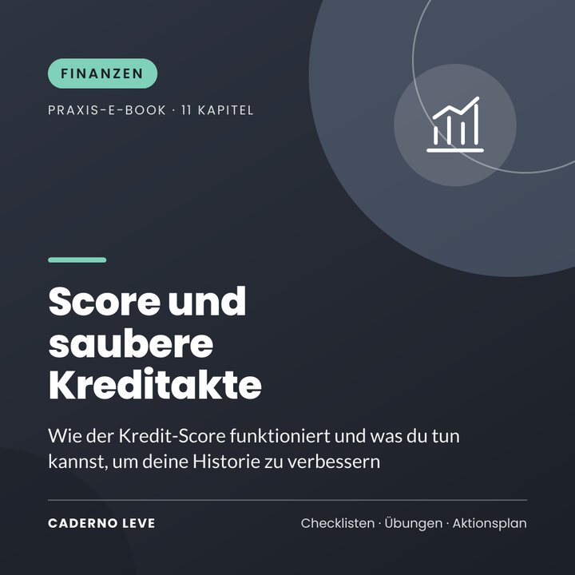

'Score und saubere Kreditakte: Dein Kredit verständlich erklärt'
Verstehe, wie Kredit-Score, positive Zahlungshistorie und Negativeinträge funktionieren, kenne deine Rechte, meide Betrug mit Löschungsversprechen und folge einem 90-Tage-Plan.
Dieses E-Book ist in Kürze erhältlich.
Sichere Zahlung und PDF-Auslieferung über Kiwify
Preis in brasilianischen Real (BRL). Beim Bezahlen siehst du den Betrag in deiner Währung.
Kredit abgelehnt und Score niedrig? Verstehe, was zählt und was du tun kannst, um deine Historie zu verbessern.
Score und saubere Kreditakte ist ein Bildungsleitfaden in einfacher Sprache darüber, wie Kredit und Kreditauskünfte funktionieren.
Du lernst, was der Score ist, was den Wert beeinflusst, wie du aus einem Negativeintrag herauskommst, deine Rechte, die häufigsten Mythen und Betrugsmaschen und einen 90-Tage-Plan.
Das nimmst du mit
- Den Score ohne Rätsel verstehen
- Schritt für Schritt zur sauberen Akte
- Verbraucherrechte
- Mythen und Betrug entlarvt
- 90-Tage-Plan
Das steckt drin
- Kapitel 1Was der Score ist
- Kapitel 2Was in den Score einfließt
- Kapitel 3Positive Historie
- Kapitel 4Negativeintrag: was er ist und wie er funktioniert
- Kapitel 5Die Kreditakte Schritt für Schritt bereinigen
- Kapitel 6Mythen über den Score
- Kapitel 7Betrug mit „Löschung“-Versprechen
- Kapitel 8Gewohnheiten für eine gute Historie
- Kapitel 9Wenn der Kredit abgelehnt wird
- Kapitel 10Deine Rechte
- Kapitel 1190-Tage-Plan
- ExtraZusammenfassung und Aktionsplan für die Umsetzung
- ExtraArbeitsblatt und Checkliste zum Ausdrucken
Für wen es ist
- Alle mit niedrigem Score
- Alle mit Negativeintrag
- Alle, die verstehen wollen, wie Kredit funktioniert
Für wen es nicht ist
- Keine Garantie für einen höheren Score
- Keine Rechtsberatung
Bonus: Arbeitsblatt „Mein Kredit in Ordnung“ — Auskunft, Plan und Fälligkeiten.
Wichtiger Hinweis
Dieses E-Book dient der Information. Es ist keine Finanz-, Rechts- oder Steuerberatung und garantiert keine Fristen, Nachlässe oder Ergebnisse – jede Situation ist anders. Prüfe vor dem Unterschreiben einer Vereinbarung die Bedingungen genau und wende dich bei Bedarf an eine Verbraucher- oder Schuldnerberatung oder eine Fachperson deines Vertrauens.
E-Book von Caderno Leve
'Score und saubere Kreditakte: Dein Kredit verständlich erklärt'
R$ 27,90
Demnächst erhältlich